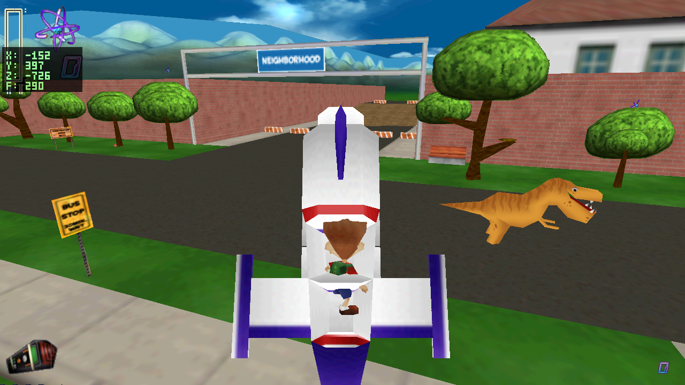
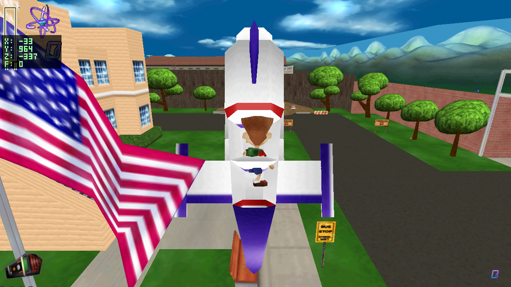
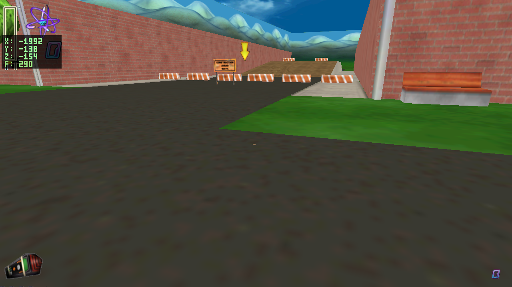
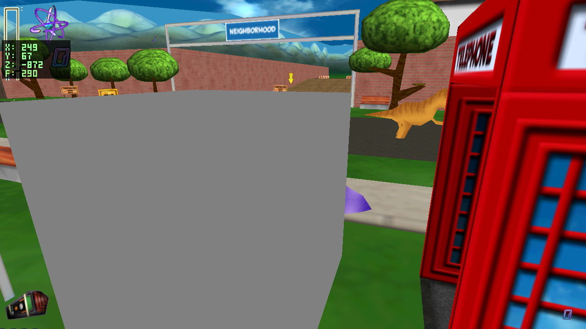
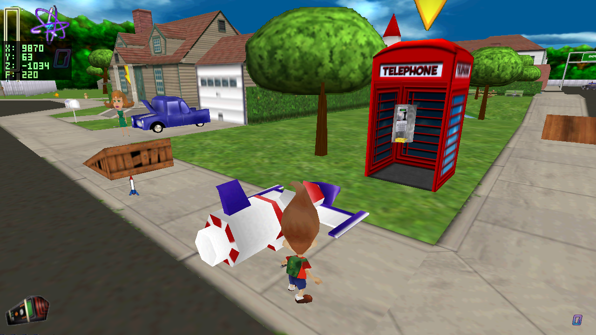
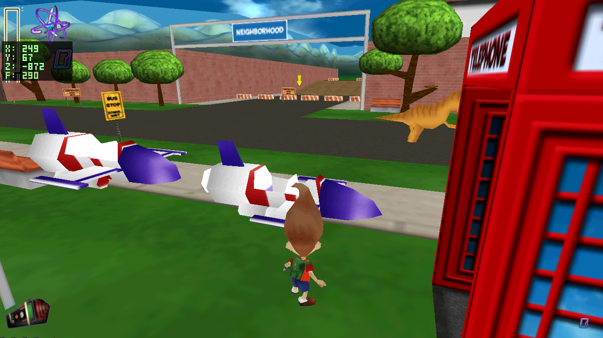

Generated 2026-06-23 · headless captures from the native build (level2/level1, sandbox mode). These are exactly the frames the engine renders; nothing is staged.
docs/decomp/C3DRocketShip.md,
C3DBaseball.md).

Flight (recollection + decomp): cruises forward on its
own; SHIFT boosts; Ctrl/Q brake cuts the engine + stops it;
Down=nose up, Up=nose down (inverted); A/D turn;
E board/leave. (Engine sound + C3DFireStrato exhaust still deferred.)
Baseball: the real ball sprite (RetainedSprites
ball0000 = 0006_32x32d32.png) is wired to PROJ and renders
(audit + texture-load confirmed). The earlier "diamond" was the wrong file. In head-on chase-cam
shots the fast ball hides behind Jimmy (thrown straight along the view axis); visible in play.
Original diagnosis (before the fixes), for the record:
C3DRocketShip / C3DBaseball.


Position trace (auto-walk forward into the rocket):
| tick | player Y | on_ground |
|---|---|---|
| 0 | 73 (normal) | 0 |
| 30 | −138 | 1 |
| 60…240 | −138 (stuck) | 1 |
Root cause: the sandbox rocket is SOLID and is spawned
centered at the player's height. The per-axis AABB resolver
(physics.c resolve_axis) pushes the player the full half-sum down the Y axis when
they penetrate the rocket's vertical span → ejected below the floor.

Root cause: the projectile is a runtime entity of FourCC PROJ,
but PROJ has no entry in entity_visual, so
entity_visual_resolve() returns 0 and the draw loop skips it. The throw works
mechanically (it can hit Yokians/balloons) but renders nothing.
Decomp ground truth: C3DBaseball (3BAS) is a
retained sprite — SpriteDatabase="retainedsprites.omt", SpriteIndex=2,
SpriteSize=25 (frames ball0000..0003). The asset exists:
RetainedSprites_images/0002_64x64d32.png. Fix = draw the projectile as that billboard.

Root cause: to fix "no rocket in level 2," I made sandbox spawn a rocket next to
the player in every level — including levels that already have an authored
3ROC (level 1 and level 2 both do). That duplicates it.

The real C3DRocketShip is a C3DFlyingObject: AccelRate=400,
MaxSpeed=1400, UpRate/DownRate=±650, NewGravity=0 — i.e.
forward thrust + yaw turn + up/down vertical, no pitch-aiming. It also owns a
C3DFireStrato exhaust child and a looping engine sound. My current model pitches the
nose with W/S, which is not how the original flies — this is the open decision below.
| # | Issue | Fix |
|---|---|---|
| 1 | Underground | Stop spawning a SOLID box on the player. Spawn only where needed, seat it on the ground (base at terrain, not centered at eye height), and/or keep it non-solid until boarded. |
| 2 | Invisible baseball | Give PROJ a visual = retainedsprites chunk-2 baseball billboard
(0002_64x64d32.png), size per SpriteSize=25. |
| 3 | Two rockets | Don't duplicate: spawn only when the level has no authored 3ROC, otherwise
relocate/lift the authored one near the player. |
| D | Lies horizontal | Apply the upright rest orientation the mesh/placement expects. |
| F | Flight scheme | Decision needed: match the decomp (forward + turn + up/down, no pitch) vs. keep the W/S pitch model chosen earlier. SPACE = "go"/forward either way. |
Engine audio + the C3DFireStrato exhaust effect remain deferred per request
(noted in docs/native_port_plan.md §6).